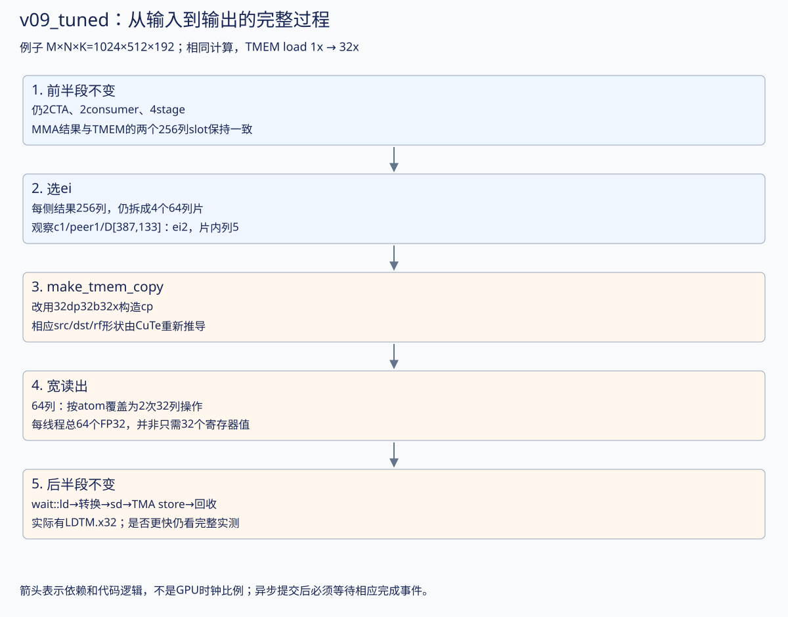
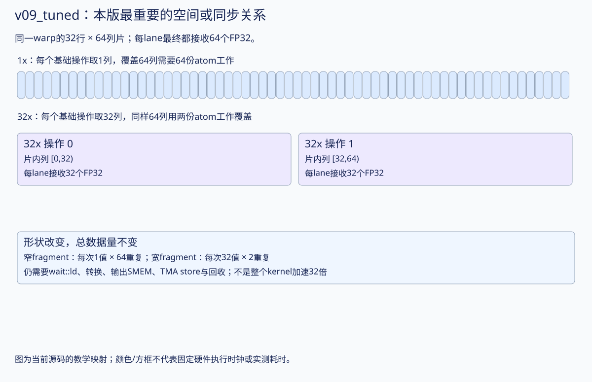

32dp表示32条TMEM datapath，32b表示每次元素宽度；32x使一条指令覆盖更多列。原来依赖大量窄load完成的64列读取，现在用更少的宽load完成。实际线程与寄存器分片由make_tmem_copy推导，不能只改指令名字却沿用不兼容的手算分片。
从上一版走到本版：完整图解
先读：上一版 · 回到版本目录。本版重点：相同计算，TMEM load 1x → 32x。下方保留完整逐行代码，先用图和具体例子建立整体过程，再对照行号。
| 量 |
本版的具体含义 |
| 合作输出任务 |
512×256；每consumer的MMA输出256×256 |
| CTA组大小 / 线程 |
2 CTA；每CTA 384线程 |
| 输入stage / consumer |
4 stage；2个MMA consumer（v07起为独立MMA角色） |
| 每CTA输入/输出SMEM数据 |
输入192KiB；输出缓冲32KiB；barrier、字段及对齐另计 |
| 每CTA TMEM |
512列，即128×512个32-bit单元 |
| 教学例子的M×N×K |
1024×512×192；不改变下方已有实测尺寸与数据 |

1. 把本次改动限定到一条操作原语
本版与v09相比，源码唯一算法差异是：
// 原版
auto cp = make_tmem_copy(SM100_TMEM_LOAD_32dp32b1x{}, ae(_, _0{}));
// 调优版
auto cp = make_tmem_copy(SM100_TMEM_LOAD_32dp32b32x{}, ae(_, _0{}));
cluster、两个独立MMA消费者、四stage输入环、TMA、barrier与输出ei循环都保留。先读v09对它们的解释；本节只把“如何把已算好的TMEM结果搬进寄存器”放大。
2. 64列输出片怎样用两种atom覆盖？
每个ei处理每CTA的128×64 FP32结果，由128个写回线程分成4个warp。对一个warp，它处理32条TMEM datapath、64列：
| atom |
每个基础操作覆盖 |
按atom粒度覆盖64列 |
每线程该ei总接收数 |
| 32dp32b1x |
32行×1列，每lane1个FP32 |
64个基础窄操作 |
64个FP32 |
| 32dp32b32x |
32行×32列，每lane32个FP32 |
2个基础宽操作 |
64个FP32 |
这是按copy atom形状数的操作粒度，最终指令编码与调度要看编译结果，不是声称整个kernel指令总数变成1/32。两种方案搬出的结果总量相同，TMEM累计数值也相同。
3. fragment 的 shape 为什么会变？
make_tmem_copy把“每条操作取多少值”纳入线程/数值映射。当前每线程一个64列输出片中，窄版的目标分片顶层为((1,1),(64))，宽版为((32,1),(2))；两者元素数都是64。
因此不能只改底层PTX的名字、仍假定旧寄存器参数数量和分片格式。这里重新通过cp构造th/src/dst，再用 shape(dst) 创建rf/rh，让CuTe保持它们一致。
源视图仍描述warp协作窗口，不能把其逻辑元素数当成每线程寄存器数。实际输出坐标映射已用CuTe identity tensor核对；宽窄版同一线程依然负责同一个逻辑输出行。
4. 跟D[387,133]跨过宽load
沿用v09：peer1、consumer1的thread131，局部copy tid=3，ei=2。该输出片覆盖列128…191，D[387,133]是片内第5列。
acc 的全输出局部列133，TMEM存储列389（含consumer偏移256）
→ ei2 的片内列5
→ 第一个32列宽load（片内列0…31）
→ 本线程rf中对应元素 → rh → d[consumer1]中的对应位置
→ TMA store写到D[387,133]
第二个宽load取片内列32…63。写回仍要经过 tcgen05.wait::ld，数值转换、输出SMEM fence、写回WG同步、TMA store commit/wait和acc_empty通知；宽load不取消任何生命周期约束。
5. 少发指令，为什么不必然超过cuBLAS？
宽load减少基础读取操作数量，但可能改变寄存器活跃范围、编译器调度和发射压力。其他瓶颈——TMA、MMA、输出store、同步、SM占用率——不会因为这一行自动消失。
本仓库保留了调优版SASS中的LDTM.x32，说明确实使用了宽读取；也保留完整数值检查和性能结果。4096³仍未超过同轮普通cuBLAS；8192³对普通cuBLAS略快、与cuBLASLt基本持平。它是有实测依据的局部调优，不能作为所有尺寸的胜出保证。
6. 自己调优时的复习清单
- 总元素数变了吗？ 没有，每线程每ei仍64个FP32。
- consumer0/1的TMEM范围变了吗？ 没有，仍为[0,256)、[256,512)。
- 可以省掉wait::ld吗？ 不能，宽度改变不等于load变成同步完成。
- 为什么用shape(dst)分配rf而不手写数组32？ 一条atom的32个值不等于整个64列片的每线程总输出；让copy映射决定fragment结构更稳妥。
本版机制放大图

如何核对这份讲解
对应本页链接的 .cu 源码；CuTe 单/双CTA分片和宽/窄load的坐标核对见 layout诊断，可运行 ./scripts/check_later_layouts.sh 复现。它在B300上用单个GPU线程检查CuTe identity tensor的坐标与分片形状，不执行MMA或TMEM数据读写。时间图只表达依赖；本轮完善文档不修改kernel，不把新增布局检查当作新的性能测量。已有正确性与性能数据仍见页面后半部分。